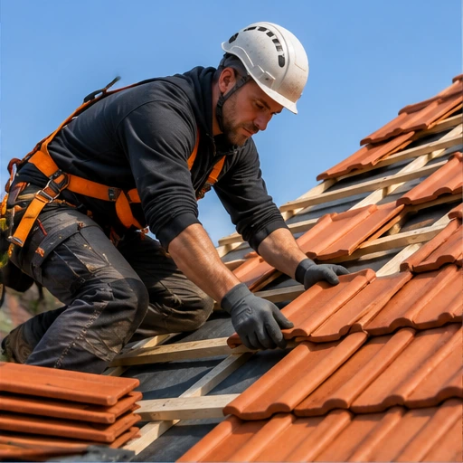
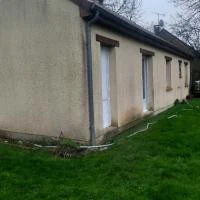
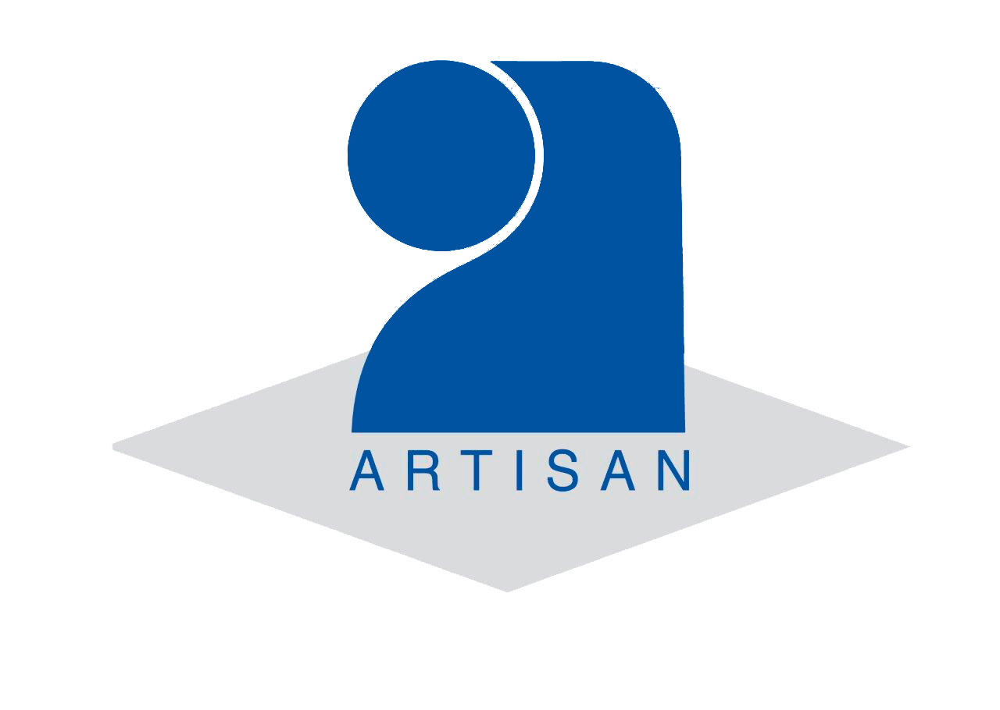

ETS Sabas, couvreur-zingueur à Amiens.
Couverture, rénovation de toiture, zinguerie et entretien : une présentation claire des savoir-faire d’ETS Sabas, avec un véritable parcours vers la demande de devis.

Du premier diagnostic aux finitions, une toiture qui mérite de l’attention.
Le site d’origine présente ETS Sabas comme un professionnel de la toiture et des façades, avec un accompagnement adapté aux besoins et au budget. La refonte met ces informations en valeur dans un parcours lisible, orienté vers la confiance et le contact.
01 Couverture neuve, remplacement et entretien de toiture
02 Étanchéité, isolation, zinguerie et pose d’éléments PVC
03 Nettoyage et ravalement de façade
Chaque chantier demande la bonne réponse.
Plutôt qu’un catalogue de prestations génériques, découvrez les domaines d’intervention documentés sur le site historique : toiture, finitions, entretien et amélioration des extérieurs.
Parler de mon projet ↗Couverture et rénovation
Couverture neuve, remplacement et entretien des couvertures existantes.
↗02Zinguerie & étanchéité
Évacuation des eaux, gouttières et raccords sensibles.
↗03Nettoyage de toiture
Traitement de l’encrassement et entretien du toit.
↗04Ravalement de façade
Nettoyage et remise en valeur des murs extérieurs.
↗05Isolation et PVC
Interventions sur l’isolation et les éléments PVC mentionnés sur le site.
↗Une couverture bien entretenue, c’est une maison mieux protégée.
Les passages de pluie, le vent et les variations de température mettent les toitures à l’épreuve. Un entretien adapté et des raccords de zinguerie soignés contribuent à la protection de l’habitation.
Des réalisations concrètes, pas de faux projets.
Les images ci-dessous proviennent du site ETS Sabas. La galerie complète permet de découvrir davantage de références de toiture, de zinguerie et de façades.




Des références à valoriser.
Le logo Artisan fourni est conservé. Les trois autres marques sont celles citées dans le brief ; leurs liens exacts avec l’entreprise restent à confirmer.


Avant de lancer vos travaux.
Une information claire encourage la prise de contact sans inventer de délais ou de garanties supplémentaires.
Quels travaux de toiture sont proposés ?
Le site d’origine mentionne la pose de couvertures neuves, le changement et l’entretien des couvertures existantes, la zinguerie, l’étanchéité, l’isolation et les éléments PVC.
L’entreprise intervient-elle sur les façades ?
Oui, le nettoyage et le ravalement de façade figurent parmi les activités décrites sur l’ancien site.
Dans quelle zone intervient ETS Sabas ?
Le site cible Amiens, la Somme et la Picardie. La zone exacte est à confirmer auprès de l’entreprise.
Comment demander un devis ?
Le numéro affiché par ETS Sabas est le 07 78 52 44 44. Le formulaire de cette maquette est une démonstration non connectée.
Une toiture ou une façade à entretenir ?
Échangez avec ETS Sabas pour présenter vos besoins à Amiens et dans la Somme.